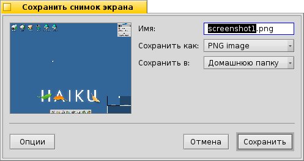

Русский
Русский Français
Français Deutsch
Deutsch Italiano
Italiano Español
Español Svenska
Svenska 日本語
日本語 Українська
Українська 中文 ［中文］
中文 ［中文］ Português
Português Suomi
Suomi Slovenčina
Slovenčina Magyar
Magyar Português (Brazil)
Português (Brazil) English
English Screenshot
Screenshot
| Расположение в Deskbar: | ||
| Расположение в Tracker: | /boot/system/apps/Screenshot | |
| Настройки хранятся по адресу: | ~/config/settings/screenshot |
Помимо получения обычных снимков экрана при помощи клавиши Print Screen, которая помещает изображение текущего экрана в формате PNG в папку: /boot/home, это приложение содержит и ряд других полезных настроек.

Вы можете захватить как весь экран так и только активное окно, причем также выбрать захватывать ли заголовок окна и указатель мыши. А также можно указать задержку, по истечении которой будет произведён снимок экрана.
Установив название, формат и место расположения для снимка экрана, воспользуйтесь кнопкой . Помимо сохранения в файл, вы также можете воспользоваться кнопкой получив тем самым ставить снимок напрямую в другое приложение. Также можно воспользоваться кнопкой .
Все настройки будут сохранены и использованы при следующем вызове приложения "снимок экрана". Для вызова существует несколько удобных комбинаций горячих клавиш:
| Снять снимок экрана и запустить приложение "Снимок экрана". | ||
| SHIFT PRINT | Снять снимок экрана без запуска приложения "Снимок экрана", используя последние настройки. | |
| CTRL PRINT | Снять снимок экрана без запуска приложения "Снимок экрана", используя последние настройки с сохранением в буфер обмена. |
 Снятие скриншота из Terminal
Снятие скриншота из Terminal
Приложение Screenshot также можно использовать из Terminal или через скрипт.
Screenshot --help выведет справку о доступных параметрах:
~> Screenshot --help Screenshot [OPTION]... Создает изображение текущего экрана. Опция: -o, --options При запуске сразу откроется окно параметров -m, --mouse-pointer Включает в снимок курсор мыши -b, --border Включает в снимок грани окна -w, --window Делает снимок только активного окна, а не всего экрана -d, --delay=seconds Делает скриншот с указанной задержкой [в секундах] -s, --silent Сохраняет скриншот, игнорируя настройки, выставленные в окне параметров и сохраняет его в домашнюю папку в PNG формате. Примечание: Опция -b, --border сработает только совместно с опцией -w, --window